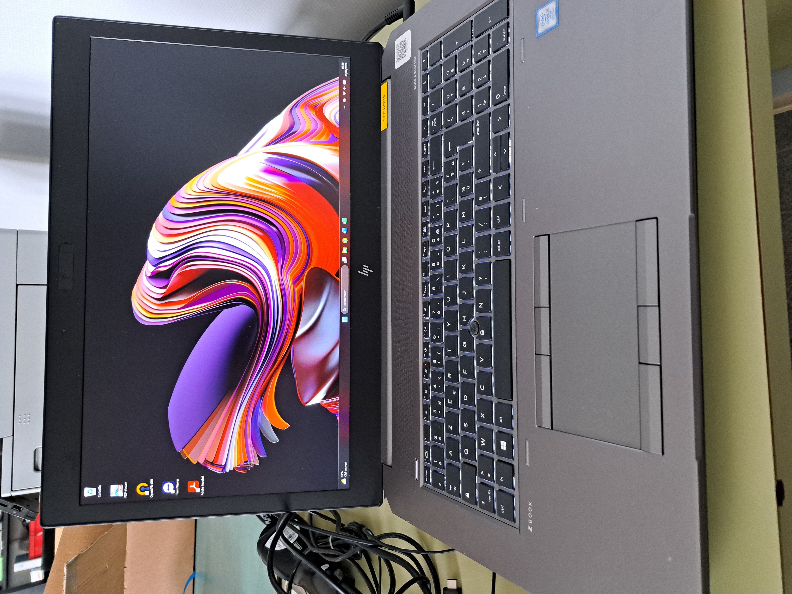

Prise de contrôle à distance de l'ordinateur des utilisateurs.
Logiciel Utilisé : DWAgent.
Configuration des ordinateurs pour les utilisateurs. Pour réaliser cela, nous avons reçu un ordinateur neuf de la part de notre préstataire avec uniquement le système d'exploitation d'installé. J'ai par la suite installé : le pack office ; l'antivirus ; le lecteur de pdf ; le vpn ; et mis l'ordinateur dans le domaine informatique de l'entreprise.

Cours d'informatique, pour : la création de CV; lettre de motivation; utilisation de Word; utilisation d'Excel.
Suite à une demande du service RH, j'ai dû donner deux cours d'informatique à une personne en recalification. Pour cela je l'ai aider pour réaliser son CV ainsi que sa lettre de motivation sur Word, dans l'objectif d'une recherche d'emploi. Je l'ai égélement formé à l'utilisation de Zimbra, que ce soit : pour envoyer des mail ; ajouter des rendez-vous dans son calendrier ou consulter le calendrier personnel et celui partagé.
Besoin exprimé par mail.
Mise en place et rangement, des micros dans la salle du conseil. Tous les mois à lieu le conseil communautaire, notre mission avec mes collègues est d'installer tous les micros le jour du conseil et de tester que tous le système est opérationnel.
Méthodologie : Disposition sur les tables des 50 micros, branchement, et test des micros.
Diagnostic d'un ordinateur portable de l'EHPAD, pour probable surchauffe. Cet ordinateur, nous a été tapporté car il avait tendance a chauffer ce qui diminuer les performance de l'ordinateur, après avoir réalisé le test le processeurs atteingner les cent degrès. Après avoir échangé avec mes collègues nous en avons déduis qu'il pouvait s'agir de la pâte thermique du processeur qui devait être changée.
Logiciel utilisé : UserDiag.
Remplacement d'un câble hdmi. Le signal n'arrivait plus au vidéo projecteur, avec mon collègue nous avons démonté la goulotte pour remplacer le câble puis nous avons fait quelques vérifications pour s'assurer de la réparation.
Besoin exprimé via GLPI.
Impression de documents, pour les écoles en panne de photocopieur. Deux copieurs ayant cessé de fonctionner mon responsable leur à proposé que nous réalisions les impressions le temps d'acheter deux nouveaux photocopieurs.
Besoin exprimé par mail.
Mise à jour de la liste des élus de la Communauté de Commune des Pays de L'Aigle et leur fonctions sur le site internet avec WordPress.
Besoin exprimé par la Présidente de la Communauté de communes des Pays de L'Aigle.
Récupération des imprimantes de prets dans deux écoles.